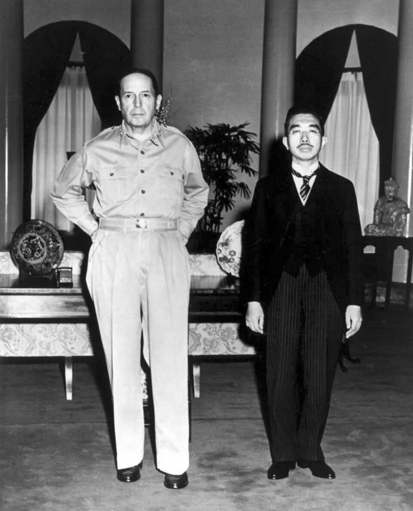
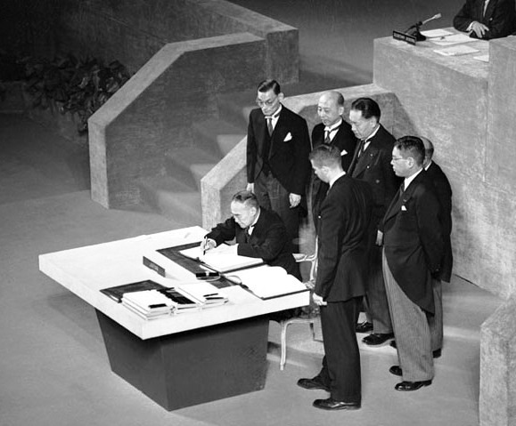
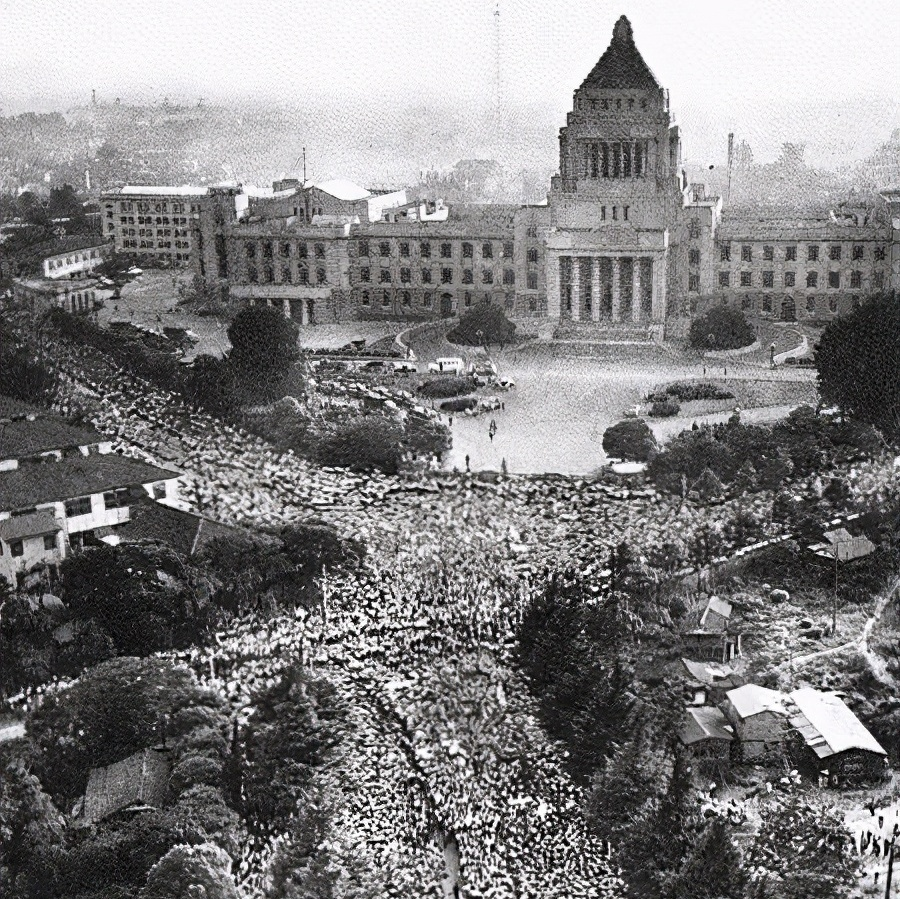
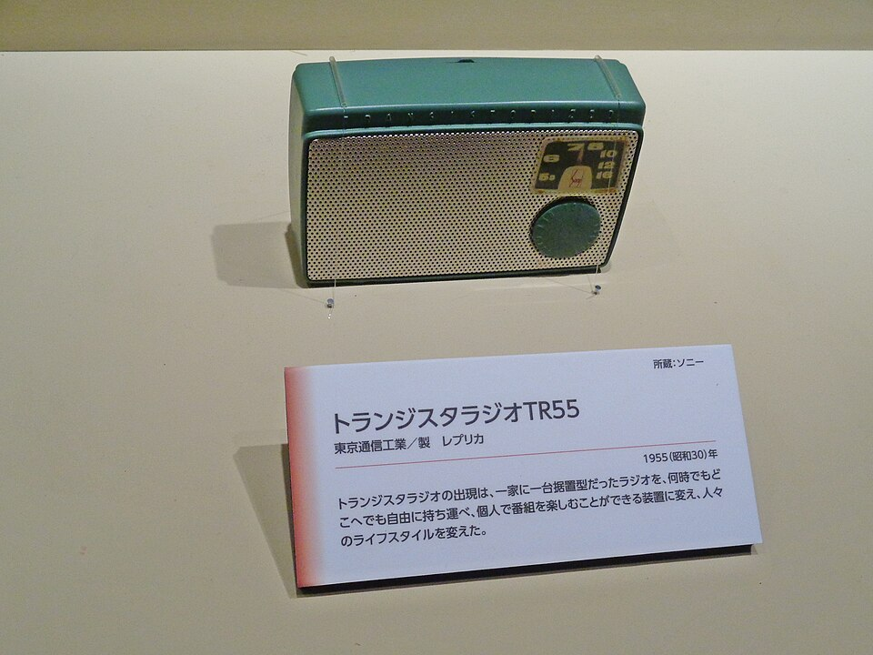
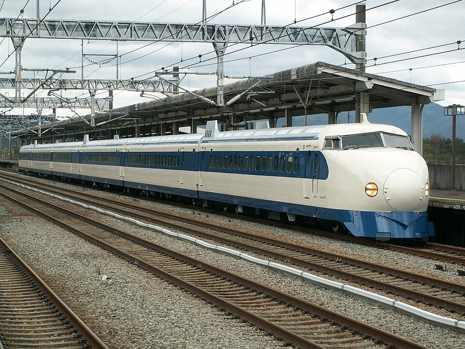
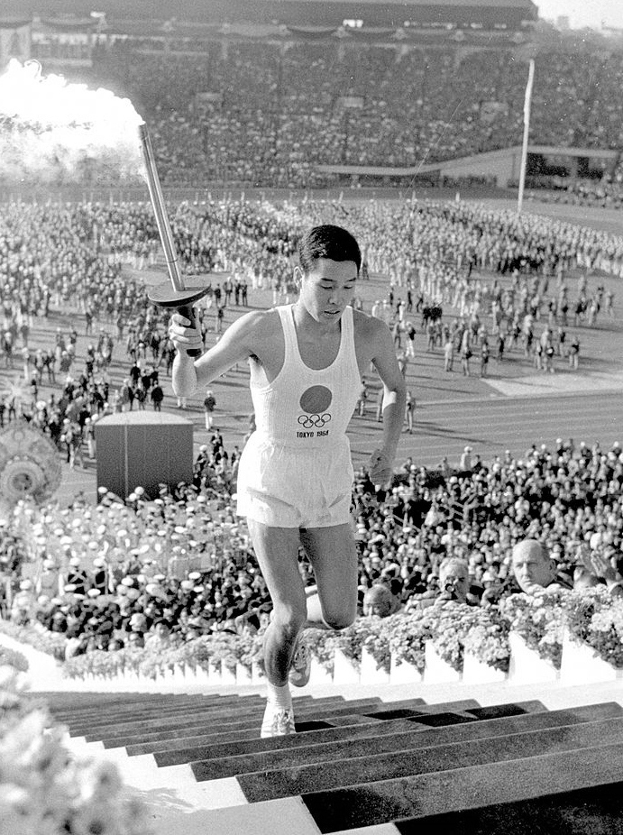
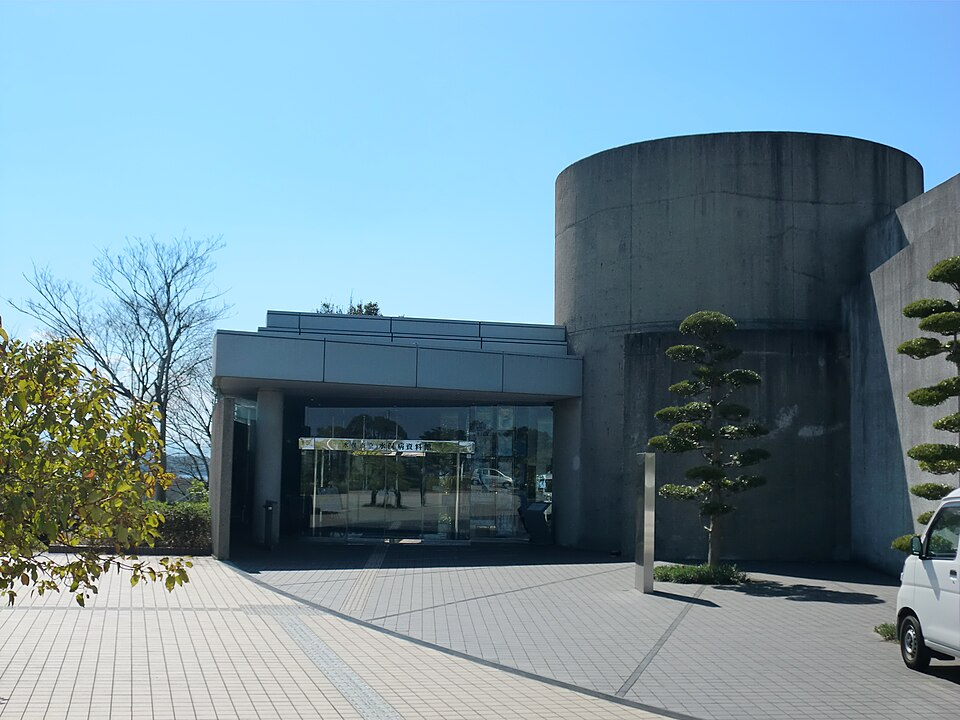
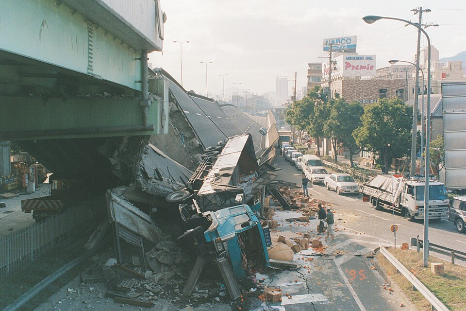
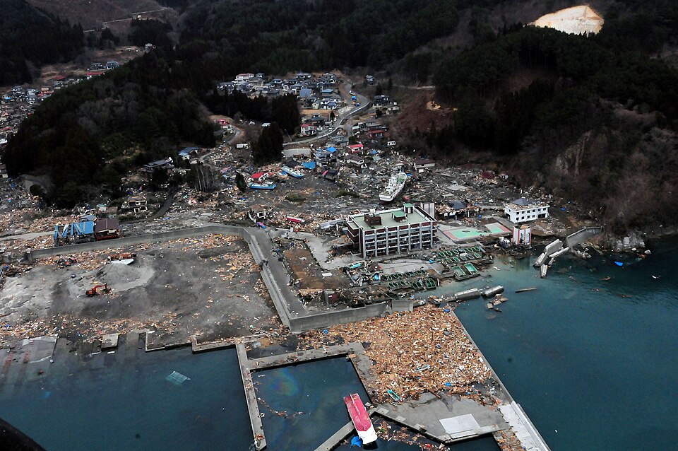

Unit 17 · Study guide · Japan
Japan from Occupation to the "Lost Decades" 戦後日本
Defeat, reform, miracle, and stagnation, 1945 to 2011
ContentsOverview
The unit in one paragraph
pp. 461, 471, 510
Japan surrendered in August 1945 hungry, bombed out, and occupied. The American occupation first set out to demilitarize and democratize the country: a new constitution with the no-war clause, land reform, a new civil code, and legal labor unions. When the Cold War began, it shifted toward building Japan up as an anticommunist ally (the reverse course). After independence in 1952 the Liberal Democratic Party governed almost without a break and made economic growth its top goal. By the 1964 Tokyo Olympics, Japan had returned to the world. Then came the costs of growth, protest, the shocks of the 1970s, a speculative bubble in the 1980s, and two decades of stagnation in an aging society. pp. 461, 471, 510
- Why did the Japanese economy rise so far and fall so fast?
- Did protests and demonstrations have any impact, given the power of the LDP and the bureaucrats?
- Which social trends will prove enduring, and which will prove beneficial?
About 3 million dead, cities burned, 6.6 million Japanese stranded abroad, food and coal rationed below survival levels, the economy at a standstill. pp. 461–462
Per capita GNP above that of the United States; the world's largest lender and aid donor; land in Tokyo valued at three times all the land in the United States. pp. 517, 520
Timeline at a glance
Defeat and the goals of the occupation
pp. 461–463
Despair pp. 461–462
Defeat did not end hardship. Everyone was short of food. The suburban middle class had been spared the firestorms that wiped out the urban poor; farmers were better off but stunned by a defeat that called loyalty and patriotism into question. The war had stranded 6.6 million Japanese soldiers and civilians abroad:
Returnees met a cold welcome. War widows, orphans, maimed veterans, and above all the radiation-sick survivors of Hiroshima and Nagasaki became social outcasts. The winter of 1945–46 was worse than any wartime winter: rations of coal and food could not prevent freezing and starvation. City women traded heirlooms for food in the countryside, and a black market run by gangsters flourished at every train station. p. 462
Liberation p. 462
For some, defeat meant freedom. Dazai Osamu's 1947 novel The Setting Sun mourned the loss of prewar values and suggested the only choice left was to live for oneself. Small factories made pots instead of helmets; ex-soldiers went into business. Popular culture turned to eroticism; prostitutes who served GIs (called "pan-pan girls") flaunted Western dresses and makeup. In the book's phrase, the body replaced the kokutai (the body politic). Prewar Marxists and socialists hoped to build a just society out of the rubble.
What the occupiers wanted pp. 461–462
General Douglas MacArthur, as Supreme Commander of the Allied Powers (SCAP), meant to demilitarize Japan and install democracy by working through existing institutions. The United States kept its allies out: the Soviets got the islands north of Hokkaido, and the rest sat on the Far East Commission in Washington. Only the judges at the Tokyo War Crimes Trials represented countries Japan had attacked.
Faction 1: punish
Restrict Japan's trade and send its remaining factories to its victims as reparations, perhaps returning Japan to farming.
Faction 2: rebuild
Economists and lawyers ready for social engineering: land reform, new schools, unions, women's rights, limits on police, a new constitution.
After 1947–49
With the Cold War and the communist victory in China (1949), the priority became keeping Japan in the "free world."
The emperor question pp. 462–463
The Shōwa emperor did not sign the surrender (September 2, 1945); a general and a diplomat did. His court distanced him from every wartime decision except the final one to end the war, and MacArthur talked him out of admitting even moral responsibility. Britain wanted him tried as a war criminal, but MacArthur saw him as a bulwark against communism once the military was gone. By refusing responsibility, the emperor also alienated far-right militarists.
On January 1, 1946, he announced he was a human being, not a manifest god. The new constitution made him a symbol of the state, and he still embodies a national identity built on ethnic homogeneity. His war responsibility remains a sore point at home and with Japan's neighbors.

Occupation reforms
pp. 463–464
Writing the constitution p. 463
- 1Oct. 13, 1945. At SCAP's urging the prime minister names a committee to consider revising the Meiji constitution. Parties, socialist groups, scholars, and think tanks draft their own versions; the committee ignores them.
- 2Feb. 1946. The committee proposes only minor changes, so MacArthur orders his Government Section to write a draft, fearing that a grassroots constitutional convention would bring too much democracy and an attack on the emperor. The work is hidden from Washington, Tokyo, the FEC, and the rest of SCAP.
- 3March 1946. After talks with cabinet representatives the draft is published and sent to the Diet. SCAP repeatedly steps in to limit debate and block major revision.
- 4Nov. 3, 1946. Passed as an amendment to the Meiji constitution, it is issued by the emperor. It took effect on May 3, 1947†.
What the constitution says p. 463
Rights
Life, liberty, and the pursuit of happiness, defined as rights to education, health care, police protection, work, and a minimum standard of living. Women's suffrage. Freedom of assembly, speech, and religion; no arbitrary arrest or unwarranted search; a right to counsel.
Government
Popular sovereignty exercised through the Diet, now the sole lawmaker. The Privy Council is abolished; an elected House of Councilors replaces the House of Peers, and the lower House of Representatives is stronger. A no-confidence vote can dissolve the cabinet. Courts become independent.
More than America had
Clauses MacArthur would have deplored at home: workers' right to organize and bargain collectively, academic freedom, and equal rights for women.
Article 9
Japan renounces war as a sovereign right and will not maintain land, sea, or air forces. Later read as allowing forces for self-defense; an FEC clause requiring a civilian cabinet was taken to imply a military.
In 1950 SCAP wanted Japan to raise an army to fight in Korea. Prime Minister Yoshida Shigeru refused, creating a Police Reserve instead. It soon became the Self-Defense Force.
Social reforms pp. 463–464
| Reform | What changed | Result |
|---|---|---|
| New civil code | Sexual equality and individual dignity; patriarchal household authority abolished; free marriage; all children share the family estate | No burden for the middle class, whose wealth was their children's education; shopkeepers, restaurateurs, and farmers often had to sell inherited property to pay heavy inheritance taxes |
| Land reform | Landlords forced to sell to the government for resale to tenants. Absentee landlords lost everything; resident landlords kept what they farmed plus about five acres | The most radical reform. Backed by the Agriculture Ministry; many landlords were glad to sell but mourned their way of life. By 1950 owner-farmers worked 90% of farmland |
| Education | U.S.-style single track (primary, middle, high school); compulsory schooling extended to nine years; civic virtues in the curriculum; elected school boards; PTAs; new junior colleges and universities | Wider access to higher education, but entrance exams remained and none rivaled Tokyo University. Later, boards chose texts from an Education Ministry list |
| Labor | Trade Union Law, Dec. 1945 | By mid-1948 more than half the nonfarm workforce was unionized |
| Trust-busting | Holding companies of the ten largest conglomerates dissolved; Mitsui and Mitsubishi trading firms broken up; families forced to sell stock; 1,500 executives purged | Halted during the reverse course (Part 3) |
The occupation did not always follow its own rules. Despite the separation of church and state, MacArthur let Christian missionaries use U.S. government equipment and encouraged the emperor and empress to take Christian instruction. Censorship continued, with left-wing writing that criticized capitalism checked before publication. Films could not show sword fighting or criticize the emperor, but romance was in: the first screen kiss made headlines.
The economy and the reverse course
pp. 464–465
Inflation and the Dodge Line p. 464
Bureaucrats let government stocks of building materials and machinery vanish into the black market or into the hands of business cronies, and the Finance Ministry printed money to cover the deficit and a run on savings. Official prices soared 539 percent in the occupation's first year; black-market prices ran 14 to 34 times higher. At the end of 1948 Washington sent Detroit banker Joseph Dodge. His Dodge Line made the government collect more in taxes than it spent; cut subsidies, public works, welfare, and education; and fixed the exchange rate at ¥360 to the dollar to promote exports. Deflation bankrupted small businesses.
Rescued by the Korean War p. 464
The Korean War pulled Japan back from the brink of depression. U.S. procurement orders poured in for vehicles, uniforms, sandbags, medicines, electrical goods, building materials, liquor, paper, and food; despite the ban on war materiel, firms made munitions and repaired tanks and aircraft. Companies reinvested profits in equipment and licensed U.S. technology, and adopted the quality-control methods that statistician W. Edwards Deming had introduced in 1949. By the war's end, food consumption was back to prewar levels and consumers could buy household goods and still save.
Labor and the reverse course pp. 464–465
With the Japan Communist and Socialist parties now legal, workers organized; others seized businesses in production control movements, accusing owners of sabotage. Workers wanted food, support for working mothers, equal pay, and democratic elections. Before the April 10, 1946, election, the first in which women voted, a Tokyo rally drew workers, farmers, Koreans, and citizens; May Day brought nationwide demonstrations; women marched for food deliveries and students for self-government. The backlash is called the reverse course:
- 1Jan.–Feb. 1947. The prime minister threatens to fire striking government workers; MacArthur calls off the general strike planned for February 1.
- 21948. SCAP has the government forbid public employees to strike.
- 3Cold War. The United States now sees its former enemy as an ally. SCAP lists "reds" to purge, first from government and then, during the Korean War, from private firms: the Red Purge. About 22,000 workers lose their jobs; most JCP leaders go underground.
- 4Rehabilitation. Purged politicians, bureaucrats, and business leaders return; the breakup of the conglomerates stops.
- 5Bureaucratic power. The Diet gives bureaucrats more control over trade and investment than in wartime. MITI channels postal savings to firms through the Japan Development Bank, advises the Bank of Japan, approves technology imports, and gives "administrative guidance." The Finance Ministry limits money leaving the country.
Ending the occupation p. 465

Before the occupation ended, the U.S. Senate had Japan sign a treaty with the Nationalist Chinese on Taiwan, blocking recognition of and trade with the People's Republic. The 1951 peace and security treaties with the United States, the book says, continued the occupation under another name. After SCAP was dismantled in 1952, about 100,000 Americans plus dependents stayed at bases protected by extraterritoriality, beyond Japanese courts and oversight. Okinawa stayed under U.S. military rule until 1972.
Under the U.S. security umbrella Japan was free to pursue growth but had to follow the U.S. lead abroad. On Bloody May Day 1952, 400,000 workers, students, and housewives denounced the treaty, rearmament, Okinawa's status, and an "anti-subversive" bill. The left wanted neutrality and demilitarization; conservatives backed the U.S. alliance.
The LDP settlement, 1952–1964
pp. 465–466
One-party rule p. 465
In the 1946 election many parties competed. Yoshida Shigeru formed a conservative coalition but resigned when the 1947 election gave the Socialists (JSP) a large share. Exploiting the JSP's failure to handle economic crises, he returned in 1948 and stayed until 1954, recruiting ex-bureaucrats skilled at building factions. The JSP split over the peace treaty and reunited in October 1955. At the end of 1955 the two conservative parties merged into the Liberal Democratic Party (LDP), which, except for brief interludes, dominated the Diet and cabinet into the twenty-first century. Faction heads chose the prime minister, who rewarded supporters with ministries.
How the LDP kept power pp. 465–466
Growth for everyone
Made economic growth the nation's top goal, mainly to wean workers from socialism. Higher wages and living standards from the late 1950s; national health insurance in 1958.
Farmers
Factories in rural areas, mechanization, chemical fertilizer, consolidated plots, rice import limits and subsidies, roads and sewers, and outright vote buying: a lock on rural districts. Small businesses gave urban votes.
Bureaucrats and business
Advisory councils of businessmen, bankers, consumers, and unions; ex-bureaucrats ran for office or joined the firms they had guided; cash flowed from business to politicians to voters.
At the end of the 1950s the government announced an Income Doubling Plan. Prosperity reached city and countryside, but it did not make people passively accept an increasingly exclusive political system. p. 471
Political and social protest, 1952–1964
pp. 466–467
Opposition parties had so little power in the Diet that citizens with grievances took to the streets. Demonstrations against U.S. bases and nuclear testing broke out through the 1950s. The Japan Teachers' Union resisted the Education Ministry's 1955 centralization of policy and personnel; Sōhyō, the General Council of Trade Unions, opposed the Japan Productivity Center that business set up with U.S. help. p. 466
The Miike strike, 1960 p. 466
When the government switched Japan's main energy source from coal to oil, Mitsui Mining asked 6,000 workers at its Miike mine in Kyushu to retire early. The union struck for 113 days, with violence and deaths. The lessons: workers learned that radical class struggle undercut job security; managers learned it was cheaper to transfer surplus workers than to fire them.
The security treaty crisis, 1959–1960 p. 466
The largest political demonstrations in Japanese history (late 1959 to June 1960) opposed revising and extending the U.S.–Japan security treaty: the Anpo protests. The revision dropped the clause letting U.S. troops put down internal disturbances, but the bases stayed off-limits to Japanese scrutiny.
- 1Prime Minister Kishi Nobusuke (indicted but never tried as a war criminal; a former minister in Manchuria) uses police to evict the JCP and JSP and rams the treaty through the lower house.
- 2Sōhyō coordinates strikes; Zengakuren students organize weeks of agitation; 134 groups, including farmers and housewives, join.
- 3President Eisenhower cancels his visit. On June 18 several hundred thousand people surround the Diet, but the treaty is ratified automatically at midnight.
- 4Kishi resigns five days later.

The divide between conservatives in power and progressives outside kept the 1960s turbulent: the left protested the 1965 peace treaty with South Korea for excluding North Korea and the PRC, and fears that the United States was bringing nuclear weapons into its bases or using Japan as a staging area for Vietnam set off repeated demonstrations. p. 466
Burakumin and women pp. 466–467
Burakumin
The new constitution and civil code spurred descendants of hereditary outcast groups to renew their fight. The Buraku Liberation League (1955) allied with the JCP and JSP and joined the treaty protests. A 1965 government report blamed their problems on discrimination; the Diet's 1969 Special Measures Law denounced discrimination without stopping it, so the BLL turned to denunciation campaigns, sometimes violent, that silenced public discussion.
Women's organizations
Worked to protect children and honor mothers; joined campaigns against nuclear testing and for peace and clean elections; elected women to the Diet. The 1956 Prostitution Prevention Law (effective 1958) achieved a prewar goal by removing legal protection for prostitution, though not sex work. Women grounded their activism in both family responsibility and constitutional rights.
High-speed economic growth
pp. 467–468
Why the economy grew pp. 467–468
The world
The Potsdam Declaration guaranteed access to raw materials Japan once took from colonies; exchange rates were stable until 1971; an open, growing world market wanted manufactured goods.
Prewar legacies
Some infrastructure, but above all human resources: trained engineers, accountants, and workers, and a commitment to achievement through education.
Workers and firms
High-school graduates trained on the job and worked long hours for their companies. Company unions demonstrated in the yearly "spring offensive" but rarely disrupted production. Higher base wages, lifetime employment, and seniority raises gave workers middle-class lives.
The state
Low-cost financing made Japan the world's largest shipbuilder in the 1950s. MITI protected carmakers by forbidding foreign investment and setting tariffs up to 40 percent. Matsushita and Sony grew with less help; subcontractors supplied quality parts.
Consumers drive the boom p. 468
Rising domestic consumption powered high-speed growth: in these years 90 percent of production went to the home market. SCAP had advertised American prosperity through the comic strip Blondie, department-store exhibits, and magazine ads. Once food improved, people wanted fashionable clothes, and every household wanted a washing machine, refrigerator, and vacuum cleaner. TV broadcasting began in 1953 because the owner of the Yomiuri newspaper and key bureaucrats thought national pride required the latest technology. The 1959 wedding of Crown Prince Akihito to Shōda Michiko, an industrialist's daughter, emptied stores of TV sets as viewers celebrated a marriage based on love. From 1955 a mass exodus from farms to cities set off a boom in suburban apartment blocks.

Bell Labs invented the transistor in 1948, but early ones were too fragile for consumer goods. Sony's researchers spent months finding usable materials. Its first transistor radio (January 1955) melted in summer heat; the second sold at home thanks to long battery life. Only in 1957, with a tiny "pocketable" radio built on a germanium breakthrough, could Sony compete with American radios. By 1960 transistor radios were Japan's second-largest export after ships. Sony introduced the first all-transistor TV in 1960.
Postwar culture and the Tokyo Olympics
pp. 468–471
Mass culture and its critics p. 468
Commercial TV stations demanded endless programs; the state broadcaster NHK ran one channel for news, drama, and sumo and another for education. Publishers wrote freely without prewar censorship.
Kurosawa Akira
Ikiru (To Live) criticized bureaucratic arrogance. Rashomon (1951), questioning whether truth can be known, won the top prize at Venice and brought Japanese film world fame.
Godzilla (from 1954)
A monster roused from the deep by a nuclear explosion; it drew on Japan's sense of victimhood.
Misora Hibari
Songs of parting and loss that spoke to the will to survive that carried women through war and occupation.
Public intellectuals such as Maruyama Masao and Mishima Yukio asked what it meant to be Japanese if the nation's only goal was economic success, and where responsibility for wartime aggression lay.
New religions p. 468
New religions offered one answer. Sōka Gakkai ("value-creating society"), founded in 1930 and suppressed in the war, was the largest by the 1960s. Its political arm, Kōmeitō (Clean Government Party, 1964), became Japan's third-largest party. It helps members find spouses, jobs, loans, and schooling and offers community and group therapy. It teaches that life's purpose is happiness, which comes from beauty, gain, and goodness, and that virtue comes from following the medieval monk Nichiren and the Lotus Sutra. Religious freedom and the move from country to town multiplied such religions; though critical of consumerism, they appeal partly through promises of material benefit.
The 1964 Tokyo Olympics p. 469
The Olympics marked the climax of high-speed growth and a turning point. Tokyo paved and cleaned streets; rebuilt stores, schools, and offices; built stadiums at Yoyogi Park, subways, roads, and new hotels (Japan's first postwar high-rises); and linked a renovated Haneda Airport to the city by monorail. The centerpiece was the Shinkansen (bullet train), which ran Tokyo to Osaka in 3 hours 10 minutes, the fastest, most reliable, and safest train in the world. Japan had joined the United Nations in 1956; worldwide coverage of the games showed a peaceful modern state, and Ichikawa Kon's documentary turned them into art.


Daimatsu Hirobumi, soldier and volleyball coach (1921–1978)
- War. Drafted after Pearl Harbor; officer school in China; fought in China and Southeast Asia; survived Burma on raw bamboo shoots through willpower.
- Prisoner. Twenty-two months as a POW of the British in Rangoon, subjected to deliberately humiliating labor in revenge for Japanese treatment of British prisoners.
- Coach. Coached women workers' volleyball at the Nichibō textile company; the team won Japan's major titles (1958) and the world championship (1962).
- Methods. Brutal: hurling balls until players collapsed, play through injury, three and a half hours of sleep before the Olympics. Also step-by-step improvement much like quality-control circles. He expected players to sacrifice everything for the company and the nation, as he had in war.
- 1964. 85% of Japan's TVs watched his team beat the Soviet Union for gold. He won an upper-house Diet seat in 1968 but lost re-election.
Political protest and environmental pollution
pp. 510–512
The protests of the 1960s, provoked by public policy and industrial pollution, showed that the costs of LDP dominance and high-speed growth could no longer be ignored. p. 510
Students, farmers, and radicals pp. 510–511
Figure 9. Flip cards on the protests of 1965–1972, pp. 510–511.
Citizens' movements and Minamata p. 511
Less dramatic but longer lasting were citizens' movements against pollution. Local governments in the 1950s had spread industry from cities to towns and made Japan the most polluted nation on earth; by the early 1970s about half the population said they suffered from pollution. Normally apolitical residents signed petitions, visited plants, and ran education drives to keep polluters out, refusing to trust company promises or to accept that defending their quality of life was selfish.
| Year | Event |
|---|---|
| 1932–1968 | A Chisso factory at Minamata, southern Kyushu, makes acetaldehyde for plastics and dumps the by-product, methyl mercury, into the sea. It builds up in fish and attacks the brain cells of animals and people, leading to a vegetative state and death. |
| 1959 | A Kumamoto University team traces the disease to Chisso and loses its government funding. With MITI support, Chisso hires researchers who "prove" mercury is not at fault; workers and local leaders blame victims' diet and hygiene. |
| 1965 | A second outbreak at Niigata, traced to another chemical plant, strengthens the Minamata case despite official efforts to discredit investigators. |
| 1971–1973 | Backed by doctors, lawyers, filmmakers, journalists, and academics, victims sue Chisso; the 1973 verdict pushes it to the edge of bankruptcy. |
| 1995 | The Environment Agency had refused the court's call to settle; the cabinet finally accepts an out-of-court settlement that denies state responsibility. |
| 2004 | The Supreme Court holds the national government and Kumamoto prefecture responsible for failing to prevent the disease; local officials still urge victims not to apply for compensation. |
Pollution diseases exposed the costs of growth and how politicians and bureaucrats had insulated themselves from citizens. Because of protest launched outside normal political channels, the government imposed strict pollution controls in the 1970s and spent a larger share of GNP on them than any other developed nation. By 1978 air and water pollution had declined, and manufacturers had learned to profit from clean technology.

Strains of the 1970s
pp. 512–514
Scandal p. 512
To keep its majority, the LDP catered to supporters to the point of scandal. Prime Minister Tanaka Kakuei had Japan National Railways build a bullet-train line through the mountains to his Niigata district at $60 million a mile, enriching construction cronies and real-estate developers. Public outcry drove him out in 1974. The LDP still held on, because voters thought the opposition too ideological and fragmented to govern.
Four shocks pp. 512–513
| Shock | What happened | How Japan adjusted |
|---|---|---|
| Nixon shock 1 (1971) | The U.S. stops accepting fixed exchange rates; the yen rises 14% to make Japanese exports dearer | Firms use cheaper imported raw materials |
| Nixon shock 2 (1972) | Nixon opens relations with the PRC without telling Japan in advance (see fact-check notes) | Tanaka follows to China seven months later; peace and friendship treaty, 1978 |
| Oil shock (1973) | OPEC embargoes countries that backed Israel; Japan depends on oil for 80% of its energy | Inflation, production cuts, consumers stop spending; Japan builds nuclear power plants |
| Second oil shock (1978–80) | OPEC raises prices again | Firms have rationalized energy use so well that they now beat less efficient rivals |
Industry restructured. A 1979 European report sneered that the Japanese were work maniacs living in "rabbit hutches"; Nixon demanded voluntary limits on textile exports. Shipbuilding consolidated and moved into ocean drilling platforms, with state wage subsidies, retraining, and relocation help; steel shifted to high-value specialty products for cars and electrical goods. In 1980 Japan produced more cars than any other country. p. 513
Company and family pp. 513–514
- Lifetime employment covered less than half the workforce. Toyota's permanent workers got seniority raises and benefits; temporary workers and 200-plus subcontractors had no security.
- White-collar recruits joined straight from college, lived in company dorms, worked and drank with coworkers.
- Only family men were promoted, so most married, perhaps an "office lady". The film series It's Tough Being a Man (from 1969) mocked this conformity.
- Ran the household and did repairs; received her husband's paycheck, gave him an allowance, and saved the rest.
- As a kyōiku mama ("education mother") she devoted herself to her children's schooling: teachers, PTA, nutrition, homework, after-school cram schools.
- Her child was her most important product. In the countryside, only 2–5% of men farmed full time; wives, parents, and children did the farming.
A university lecturer and working mother describes life in a government apartment complex in Nara where nearly every mother of young children stayed home. Neighbors assumed she was a housewife; at the playground the other mothers politely ignored her and later asked if she even lived there. A day-care director had never heard of paid sitters for sick children. Once neighbors learned she spent two nights a week away, they blamed her son's frequent illnesses on her absence and pitied his father, even though the dates did not match. The essay shows how women themselves policed the ideal of the full-time mother, set out in a 1970 government Family Charter that called mothers their children's best educators.
Women, minorities, and "Japaneseness"
pp. 514–516
Women at work pp. 514–515
Until the mid-1980s almost 90 percent of companies rejected women with four-year degrees, since hiring them would mean a management track. Women were hired as clerks or assembly workers on the understanding that they would quit at marriage or at thirty. In the late 1960s courts ruled this sex discrimination; in the early 1970s they banned forced retirement for pregnancy, childbirth, or at a younger age than men. Women also objected to protective limits on their hours and jobs. The Diet's Equal Employment Opportunity Act (1985) urged equal treatment but carried no sanctions.
Minorities pp. 515–516
| Group | Conditions | Key developments |
|---|---|---|
| Burakumin | In 1977, 28.5% of Osaka burakumin were unemployed (national rate about 3%); jobs were temporary, low-paid, in small firms | The 1969 assimilation law funded sewers, paved streets, housing, schools, hospitals. In 1976 access to family registers was restricted, but detective agencies sold lists of burakumin addresses to big companies |
| Ainu | Ignored in the 1968 centennial of Hokkaido's colonization | Kayano Shigeru opened a museum (1972), wrote on Ainu language and folktales, and became the first Ainu Diet member (1994); activists revived seasonal ceremonies |
| Okinawans | Returned to Japan in 1972, but U.S. bases stayed | Economy depends on the bases and tourists; music, dance, and crafts popular on the mainland; karate its most famous export |
| Resident Koreans | 637,000 in 1999. Citizens under the empire, they became permanent resident aliens: taxed but unable to vote, fingerprinted for alien cards | Fingerprinting changed and local voting allowed in 1991; still refused marriage, jobs, and housing; split between supporters of North and South |
Burakumin, Ainu, and Okinawans have had higher poverty and dropout rates than the national average, and the state hires minorities only in low-level jobs. p. 516
Nihonjinron and the middle-class nation p. 516
Nationalists ignored this diversity and praised a uniquely homogeneous race. The Nihonjinron ("Japaneseness") debate arose in response to the late-1960s protests, universal social-science theories, and foreign criticism of Japan's trade. The more Japanese lived like everyone else in the developed world, the more they were told they were exceptional: a language outsiders cannot understand, a natural love of consensus and harmony, the group above the individual, even intestines supposedly unsuited to Australian beef.
The roaring 1980s
pp. 516–520
Trade friction pp. 516–517
- 1Cars. Japan answered the oil and pollution crises with fuel-efficient, cleaner cars. When stricter emission rules, demand for quality, and gas prices caught Detroit by surprise, Japanese automakers seized the American market.
- 21985. To make Japanese goods dearer, the Reagan administration drove the dollar down (the Plaza Accord†), which the book says made Japan "twice as rich." The yen bought twice as much oil, and Japan's streamlined firms needed half the inputs of U.S. rivals.
- 3Market access. U.S. negotiators demanded more imports. Japan's tariffs on manufactures were low, but it protected farmers and had non-tariff barriers: safety rules, a multilayered distribution system, and zoning that favored small shops. Slowly, Australian cheese, McDonald's, Kentucky Fried Chicken, Seven-Eleven, and Tokyo Disneyland (1983) arrived.
- 4Capital abroad. Surpluses and a strong yen exported capital: labor-intensive plants in low-wage Asia; high-tech plants in rich countries to get around quotas. Toyota went multinational. Japan financed U.S. debt, became the largest lender to developing countries and the chief aid donor, and supplied half of the World Bank's lendable capital.
- 5Dumping. U.S. chipmakers accused Japan of selling below cost (1985); Japan accepted voluntary quotas (1986). Firms then formed joint ventures, such as Toyota with General Motors.
History and the neighbors p. 518
Japanese investment deepened ties with Asia; critics said Japan had finally built its Greater East Asia Co-Prosperity Sphere. Nationalism strained relations. In 1982 the Education Ministry approved a textbook that minimized aggression in China, drawing protests from China, both Koreas, and others; aggression and the suffering of Korean women forced into military brothels were still issues in the 2005 textbooks. Prime ministers' visits to Yasukuni Shrine, where war criminals are enshrined, drew criticism. When South Korea's president first visited Japan in 1984, Seoul erupted in protest.
Nakasone and privatization pp. 518–519
Deficit spending since 1973 had been fed by farm subsidies, the public corporations JNR (railways) and NTT (telephones), and national health insurance, free for the elderly from 1972. Following Thatcher, a 1981 commission proposed privatization, partly to break the railway union (which had shut JNR for eight days in 1975 to win the right to strike). Nakasone Yasuhiro (prime minister 1982–1987) privatized JNR and NTT, got the state out of tobacco, made the elderly pay for health care, urged family values and the young's duty to care for elders, credited Japan's success to ethnic homogeneity, and called for "internationalization" to ease trade friction.
The good life pp. 518–519
Things
Bread-making machines, 3D TV, self-heating canned saké; Itami Jūzō's satirical films; 1.45 billion books and 4.01 billion magazines sold in 1987, many of them manga.
Writers
Murakami Haruki on the absurdity of modern life (A Wild Sheep Chase; later 1Q84); Yoshimoto Banana's Kitchen; nostalgia for occupation days in Kuroyanagi Tetsuko's Totto-chan (4 million copies).
Roots
A search for the furusato (home village): JNR's "Discover Japan" campaign, revived village festivals and daimyo processions for tourists, invented folk crafts to sell as souvenirs.
Youth
The Harajuku "bamboo shoot tribe" (1978), biker gangs, school bullying (reported from 1985). A "new breed" rejected their elders' work ethic, took part-time jobs, lived with parents, and spent on clothes and travel.
Manga took their modern form in 1959 as cheap entertainment for all ages. The first postwar generation kept reading them into adulthood: escapist (often violent and pornographic) fantasy for commuting salarymen, science fiction for the young, history for exam-takers (Barefoot Gen on Hiroshima), and even economics (Japan Inc., 1986, over a million copies). Sales peaked in 1994, when manga were a third of all publishing; since then readers have turned to phones and handheld games.
The bubble p. 520
In 1989 Sony's Morita Akio and Ishihara Shintarō (later mayor of Tokyo) published The Japan That Can Say No, blaming "Japan bashing" on racism while also scolding Japan's government and people. Banks pushed loans on borrowers; Japanese bought Western art; Mitsubishi bought Rockefeller Center and Sony bought Columbia Pictures.
Twenty years without progress
pp. 520–521
Japan's world role p. 520
The United States grumbled when Japan sent no troops to the 1991 Gulf War, though its military spending ranked third in the world. Japan paid $10 billion toward the war, later sent minesweepers amid constitutional debate, joined peacekeeping in Cambodia and East Timor, and after September 11, 2001, passed an anti-terrorism law that allowed rear-echelon support in Iraq (2004).
The LDP stumbles pp. 520–521
- 11989. The Shōwa emperor dies; the new era is named Heisei. Prime Minister Takeshita brings in a 3% value-added tax, then resigns over 150 million yen from Recruit Cosmo. A successor lasts six weeks. The JSP under Doi Takako, running many women, wins the upper house.
- 21993. Younger politicians split the LDP; the Japan New Party picks the prime minister after the LDP loses the lower house. The worst rice harvest in two centuries forces the first rice imports since the war.
- 31995. Two more non-LDP prime ministers fail to handle the economy or the Kobe earthquake of January 17.
- 41996–2001. A chastened LDP returns; in 2001 faction bosses choose Koizumi Jun'ichirō, who promises structural reform to liberals and revision of the pacifist constitution to conservatives.
- 52009. Fed up with weak leaders, voters choose the new Democratic Party, which promises to cut public works and ministry budgets.

Why the bubble burst and stayed burst p. 521
- The crash. A recession in the developed world cut sales, and low-wage competitors took market share. Firms that had borrowed to buy land or expand found debts larger than assets.
- 1997. The Asian financial crisis, set off by speculators dumping Asian currencies, brought another recession; two brokerages and a bank failed. Growth, barely 1% a year in 1992–95, went negative; deflation set in.
- Failed cures. Culture halls and crafts in the 1980s, then dams, roads, and postmodern buildings in the 1990s; near-zero interest rates and support for bad loans; bureaucratic reform blocked by inertia.
- Koizumi. Halted a swamp-reclamation project, paid farmers not to plant rice, and moved to privatize the post office, threatening the Finance Ministry's off-budget control of $3 trillion in postal savings.
- Debt. By 2009 gross public debt was twice the size of the $5 trillion economy, the highest in the industrialized world.
March 11, 2011 p. 521
An earthquake off northeastern Japan killed nearly 20,000 people and destroyed more than 125,000 buildings. The tsunami swept up to six miles inland and caused a meltdown at the Fukushima nuclear plant; nearly 90,000 people were evacuated from a twelve-mile zone. Many devastated villages had aging populations: should they be rebuilt if the young will not return? Leaders argue land-poor Japan must clean up the zone, not abandon it as the Soviets did at Chernobyl, the only larger nuclear disaster; critics doubt it will work and say Japan cannot afford it.

What changed, 1931 to 2011?
pp. 471, 523
| 1931 | 1964 | About 2011 | |
|---|---|---|---|
| Power | Overseas empire; proud army | Lost even Okinawa; SDF specializes in domestic disaster relief | Critics want a "normal nation" with a recognized military |
| Emperor | Citizens trained in patriotism | Academics free to criticize him | Politicians calling him a living god anger neighbors |
| Economy | Prewar foundations being laid | GDP above its prewar peak; consumer electronics drive exports | Third-largest economy, but stagnant; Japan "became rich before it became old" |
| Society | Rural majority | Mass migration to cities | Clean, safe cities; persisting discrimination; fewer babies |
Japan recovered thanks to the changing international climate of the late 1940s and early 1950s, the occupation's reforms, the U.S. security umbrella, and U.S. recognition that democracy needed economic stability, but also, the book stresses, the bureaucratic, educational, and industrial foundation laid before the war. p. 471
Since the 1960s Japan has become a mature industrial democracy and a major cultural presence (Japanese food, fashion, popular music, and karaoke, introduced in 1980). After the 1970s shocks it mended relations with China, learned to live with a strong yen, and cut energy use while building nuclear plants, at least until Fukushima. Protest and citizens' movements are largely things of the past. Diplomacy has been rougher: memories of war and wariness of China's rise persist, even though Japan now trades more with China than with the United States. p. 523
Unit 18 turns to China after Mao, whose Special Economic Zones Japanese capital dominated (p. 518). Unit 19 takes up aging populations, regional economic ties, and the unresolved history disputes (textbooks, Yasukuni) that this unit introduces.
Test yourself
Flashcards
Who's who
| Person | Why they matter |
|---|---|
| Douglas MacArthur | SCAP, 1945–1951†; demilitarization, the constitution, land reform; shielded the emperor; called off the 1947 general strike |
| Shōwa emperor (Hirohito) | Renounced divinity (1946); became "symbol of the state"; war responsibility never settled; died 1989 |
| Joseph Dodge | Detroit banker whose 1949 austerity plan fixed ¥360 to the dollar |
| W. Edwards Deming | U.S. statistician who brought quality-control methods to Japan (1949) |
| Yoshida Shigeru | Prime minister 1946–47 and 1948–54; refused to raise an army, created the Police Reserve; signed the 1951 treaties |
| Kishi Nobusuke | Unindicted war-crimes suspect; forced the 1960 treaty through the Diet; resigned after the Anpo protests |
| Daimatsu Hirobumi | Ex-POW whose brutal coaching won women's volleyball gold in 1964 |
| Kurosawa Akira · Misora Hibari | Director of Rashomon and Ikiru · singer of songs of loss and survival |
| Mishima Yukio | Novelist who questioned postwar identity and killed himself after calling on the SDF to revolt (1970) |
| Tanaka Kakuei | Prime minister; pork-barrel bullet train to Niigata; followed Nixon to China; forced out 1974 |
| Kayano Shigeru | Ainu cultural activist; first Ainu Diet member (1994) |
| Fujita Mariko | Author of the document on working mothers in Nara |
| Nakasone Yasuhiro | Prime minister 1982–87; privatized JNR and NTT; family values and "internationalization" |
| Morita Akio · Ishihara Shintarō | Authors of The Japan That Can Say No (1989) |
| Murakami Haruki · Yoshimoto Banana | Novelists of 1980s and later Japan |
| Takeshita Noboru · Doi Takako | Prime minister brought down by the Recruit scandal (1989) · JSP leader who won the upper house that year |
| Koizumi Jun'ichirō | Prime minister from 2001; structural reform and post office privatization |
Key dates
| 1945 | Surrender (Aug. 15); occupation begins (Aug. 30); Trade Union Law (Dec.) |
| 1946 | Emperor denies divinity (Jan. 1); women vote (Apr. 10); constitution issued (Nov. 3) |
| 1947 · 1948 | General strike called off · public employees banned from striking; Yoshida returns; Dodge sent |
| 1949 · 1950 | Deming introduces quality control; China goes communist · Korean War; Police Reserve |
| 1951 · 1952 | Peace and security treaties · occupation ends; Bloody May Day |
| 1953 · 1955 | TV broadcasts begin · LDP formed; JSP reunites; BLL founded; Sony transistor radio |
| 1956 · 1958 | UN membership; Prostitution Prevention Law · national health insurance |
| 1959 · 1960 | Crown prince's wedding; Minamata cause found · Anpo protests; Miike strike; Kishi resigns |
| 1964 | Tokyo Olympics; Shinkansen; Kōmeitō founded |
| 1965 | Treaty with South Korea; Narita site chosen; Niigata mercury outbreak |
| 1968–69 · 1970 | Tokyo University strike; Special Measures Law (1969) · Mishima's suicide |
| 1971 · 1972 | Nixon ends fixed rates; Minamata suit · Nixon to China; Okinawa returned; free elder care |
| 1973 · 1974 | Oil shock; Minamata verdict · Tanaka resigns |
| 1978 · 1980 | Treaty with China; Narita opens† · Japan leads the world in car production |
| 1982 · 1983 | Nakasone; textbook controversy · Tokyo Disneyland |
| 1985 · 1986 | Dollar devalued; EEOA; chip "dumping" charge · voluntary chip quotas |
| 1988 · 1989 | Per capita GNP passes the U.S. · Shōwa emperor dies; Recruit scandal; JSP wins upper house |
| 1990–92 · 1991 | Stock market collapses · Gulf War; Koreans' fingerprinting ends |
| 1993 · 1994 | LDP loses power; rice imports · first Ainu Diet member; manga sales peak |
| 1995 · 1997 | Kobe earthquake; Aum gas attack; Minamata settlement · Asian financial crisis; negative growth |
| 2001 · 2004 | Koizumi · troops support Iraq; Supreme Court Minamata ruling |
| 2009 · 2011 | Democratic Party wins; 5.6% unemployment · March 11 earthquake and Fukushima |
Discussion questions
Open each for points the reading gives you to work with. The first three are Chapter 29's opening questions; the next two come from Chapter 26's summary; the rest are the textbook's questions on its Biography and Documents features.
Why did the Japanese economy rise so far and fall so fast?
- Rise: Korean War procurement; licensed U.S. technology and quality control; trained workers and education; open world markets and stable exchange rates; MITI protection and cheap credit; domestic consumer demand (pp. 464, 467–468).
- Adjustment: energy efficiency after the oil shocks; fuel-efficient cars took the U.S. market (pp. 513, 516).
- Fall: the post-1985 yen and easy credit inflated land and stocks; recession abroad and low-wage rivals cut sales; debts outran assets; 1997 crisis; stimulus and near-zero rates failed (pp. 520–521).
Did protests and demonstrations have any impact, given the power of the LDP and the bureaucrats?
- Yes, partly: Anpo did not stop the treaty but forced Kishi out and Eisenhower's visit off (p. 466); Minamata and citizens' movements produced strict pollution laws (pp. 511–512); Narita shrank to one runway and changed later airport planning (p. 511); women won court rulings on forced retirement (pp. 514–515).
- No, or little: the EEOA and the 1969 Special Measures Law lacked teeth (pp. 466, 515); the LDP kept power.
Which social trends will prove enduring, and which will prove beneficial?
- Enduring: aging and low birth rates, later marriage, women's education, part-time and insecure work, foreign workers (pp. 522–523).
- Mixed: decline of lifetime employment and seniority pay; youth rejecting the work ethic; growing cosmopolitanism alongside persistent discrimination.
What impact did World War II have on Japan, and what was the war's legacy?
- Destroyed lives, infrastructure, and for a time belief in the Japanese spirit (p. 471).
- Legacies: no empire, Article 9 and the SDF, U.S. bases, unresolved emperor and war-responsibility questions, textbook and Yasukuni disputes (pp. 463, 518).
- But wartime bureaucracy, industry, and training underpinned recovery (p. 471).
Was the occupation a democratic revolution, or did the reverse course undo it?
- Lasting change: constitution, women's vote, land reform, civil code, schools (pp. 463–464).
- Reversal: strike bans, the Red Purge, rehabilitated purgees, halted trust-busting, stronger bureaucrats (p. 465).
- Contradictions: SCAP drafted democracy in secret, censored, and favored Christianity (pp. 463–464).
Biography: What did Daimatsu Hirobumi remember of his wartime experience?
- Starvation in Burma, survived by willpower; humiliation as a British POW (p. 470).
Biography: What effect did the war have on the rest of his life?
- He carried the ethic of total sacrifice into coaching, demanding that players give everything for company and nation (p. 470).
Biography: What do his training methods tell you about company culture in postwar Japan?
- Company teams, loyalty to the firm, step-by-step improvement like quality-control circles, and acceptance of extreme demands (p. 470).
Documents: What are the conflicts between working and being a mother?
- Neighbors assumed mothers stayed home; childcare for sick children was unavailable; absence was blamed for a child's illness (pp. 514–515).
Documents: How do women interact across the work divide?
- Working and nonworking mothers formed separate circles; housewives ignored and then criticized the working mother (p. 515).
Documents: What roles are fathers expected to play in child rearing?
- Little: when the father cared for the sick child, neighbors pitied him as unduly burdened (p. 515).
Key terms
Click to expand
Terms are grouped by topic. Where a term depends on another, the entry says what it builds on, so read those first. Hover or tap any dotted term in the text for a quick definition, or open ✎ at the bottom right. † marks a term or fact from outside the textbook. Terms from earlier units are repeated briefly where you need them.
From earlier units (review)
- Kokutai
- The "national body" or polity centered on the divine emperor, prewar Japan's core ideology. After defeat, popular culture replaced it with the physical body. p. 462; Unit 14
- Shōwa emperor
- Hirohito, emperor from 1926 until his death in 1989. Protected from trial by MacArthur; renounced divinity in 1946. pp. 462–463, 520; Unit 14
- Potsdam Declaration
- The 1945 Allied terms for Japan's surrender; it guaranteed Japan access to raw materials. p. 467; Unit 14
- Diet
- Japan's parliament, created under the Meiji constitution; made the sole lawmaking body in 1946. p. 463; Unit 8
- Conglomerates (zaibatsu†)
- Family-controlled business groups such as Mitsui and Mitsubishi. SCAP broke up their holding companies, then stopped. pp. 464–465; Unit 10
- Burakumin
- Descendants of hereditary outcast groups, the "new commoners" of 1871; still face job and marriage discrimination. pp. 466, 515; Unit 10
- Ainu
- The indigenous people of Hokkaido, who launched a pride movement in the 1970s. p. 515; Unit 10
- New religions
- Religions founded since the nineteenth century; they multiplied after 1945 with religious freedom and urbanization. pp. 468, 522; Unit 10
The occupation
- Douglas MacArthur
- U.S. general who headed the occupation from August 30, 1945. p. 461
- SCAP
- Supreme Commander of the Allied Powers: MacArthur's title, and shorthand for the occupation bureaucracy. p. 462Builds on: MacArthur
- Far East Commission (FEC)
- The Allied body in Washington that oversaw SCAP policy, used to keep the Allies out of Japan. p. 462
- Symbol of the state
- The emperor's role under the new constitution, after he declared himself human (Jan. 1, 1946). p. 463Builds on: Shōwa emperor
- Article 9
- The constitution's no-war clause: Japan renounces war and will not maintain armed forces. Later read to allow self-defense. p. 463
- Self-Defense Force (SDF)
- Japan's military, grown from Yoshida's 1950 Police Reserve. p. 463Builds on: Article 9
- New civil code
- Abolished patriarchal household authority and required that all children share the estate. p. 463
- Land reform
- SCAP's most radical reform: landlords sold land to the state for resale to tenants. By 1950 owner-farmers worked 90% of farmland. p. 463
- Trade Union Law
- SCAP law of December 1945 that let workers organize; over half of nonfarm workers were unionized by 1948. p. 464
Economy and the reverse course
- Dodge Line
- Banker Joseph Dodge's austerity plan against inflation: a surplus budget, cuts, and a ¥360 rate. p. 464
- Quality control
- Statistical methods introduced by W. Edwards Deming in 1949 and adopted by export industries. p. 464
- JCP and JSP
- Japan Communist Party and Japan Socialist Party, legal after 1945; they fostered unions and led the opposition. p. 464
- Reverse course
- The occupation's turn against labor activism and toward building Japan as a Cold War ally. p. 465Builds on: SCAP, JCP and JSP
- Red Purge
- SCAP's purge of "reds," first from the public sector, then during the Korean War from private firms. p. 465Builds on: Reverse course
- MITI
- Ministry of International Trade and Industry; channeled postal savings to firms, approved technology imports, and gave "administrative guidance." pp. 465, 468
- Peace and security treaties
- The 1951 agreements that ended the occupation (1952) but kept U.S. bases with extraterritoriality. p. 465
Politics and protest, 1952–1972
- Yoshida Shigeru
- Conservative prime minister who refused to raise an army and signed the 1951 treaties. pp. 463, 465
- Liberal Democratic Party (LDP)
- Formed in 1955 from two conservative parties; ruled almost continuously, with faction bosses choosing prime ministers. p. 465
- Income Doubling Plan
- Government plan announced at the end of the 1950s to spread prosperity. p. 471Builds on: LDP
- Sōhyō
- The General Council of Japanese Trade Unions; led opposition to the Productivity Center and the security treaty. p. 466
- Zengakuren
- All Japan Federation of Student Self-Government Associations; active in the Anpo and Narita protests. pp. 466, 511
- Miike strike
- Violent strike against layoffs at Mitsui's Miike coal mine as Japan switched to oil. p. 466
- Kishi Nobusuke
- Prime minister, indicted but never tried as a war criminal; resigned after the 1960 protests. p. 466
- Anpo protests†
- The largest demonstrations in Japanese history, against revising the U.S.–Japan security treaty. ("Anpo" is the Japanese short name for the treaty†.) p. 466Builds on: Peace and security treaties, Kishi
- Buraku Liberation League (BLL)
- Founded 1955; allied with the JCP and JSP to publicize discrimination. p. 466Builds on: Burakumin
- Denunciation campaigns
- BLL confrontations with discriminators, sometimes violent, used because the 1969 law had no teeth. pp. 466–467Builds on: BLL
- Citizens' movements
- Local campaigns by ordinary residents outside party politics, especially against pollution. p. 511
- Minamata disease
- Methyl-mercury poisoning from the Chisso factory at Minamata; the landmark pollution case. p. 511
Growth, culture, and society
- Lifetime employment
- Permanent employment with seniority raises at large firms; covered less than half the workforce. pp. 467, 513
- Shinkansen
- The bullet train, Tokyo to Osaka in 3 hours 10 minutes, centerpiece of the 1964 Olympics. p. 469
- Sōka Gakkai
- "Value-creating society," a lay Nichiren Buddhist new religion, the largest by the 1960s. p. 468Builds on: New religions
- Kōmeitō
- The Clean Government Party, Sōka Gakkai's political arm, founded 1964; Japan's third-largest party. p. 468Builds on: Sōka Gakkai
- Office lady (OL)
- A woman clerical worker expected to put the company first and retire at marriage. p. 513
- Kyōiku mama
- "Education mother," obsessed with her children's educational success. p. 514
- Equal Employment Opportunity Act
- 1985 law urging employers to treat women like men, with no penalties. p. 515
- Kayano Shigeru
- Ainu cultural activist; opened a museum (1972) and became the first Ainu Diet member (1994). p. 515Builds on: Ainu
- Resident Koreans (zainichi†)
- Koreans who stayed in Japan after 1945 and became permanent resident aliens, without the vote until 1991's local-election change. p. 516
- Nihonjinron
- "Theories of Japaneseness" claiming a uniquely homogeneous, harmonious people. p. 516
- Manga
- Japanese comics, in their modern form from 1959; sales peaked in 1994. p. 519
- Furusato
- "Home village," idealized in the 1980s as the root of Japanese identity. p. 519
Shocks, boom, and stagnation
- Tanaka Kakuei
- LDP prime minister; built a bullet-train line to his district; went to China in 1972; resigned in 1974. pp. 512
- Nixon shocks
- The 1971 end of fixed exchange rates and Nixon's 1972 China opening without warning Japan. p. 512
- Oil shock
- OPEC's 1973 embargo; Japan relied on oil for 80% of its energy. A second shock came in 1978–80. pp. 512–513
- Nakasone Yasuhiro
- Prime minister 1982–1987; privatized JNR and NTT; family values and "internationalization." p. 518
- Plaza Accord†
- The September 1985 agreement of five major economies to bring down the dollar; the yen roughly doubled. The book describes it as Reagan devaluing the dollar. p. 517
- Non-tariff barriers
- Quality rules, layered distribution, and zoning that limited imports without tariffs. p. 517
- Yasukuni Shrine
- Shrine where war criminals are enshrined; prime ministers' visits anger Asian neighbors. p. 518
- Bubble economy
- Speculative boom in land and stocks that collapsed from 1990. pp. 520–521Builds on: Plaza Accord
- Heisei
- The era name taken in 1989, translatable as "achieving peace." p. 520
- Recruit scandal
- Prime Minister Takeshita resigned over 150 million yen from Recruit Cosmo. p. 520
- Koizumi Jun'ichirō
- LDP prime minister from 2001; structural reform and post office privatization. pp. 520–521
- Aum Shinrikyō
- New religion whose followers released poison gas in the Tokyo subway in March 1995. p. 522Builds on: New religions
- Parasite singles
- Critics' label for young people living with parents and avoiding permanent jobs. p. 522
- Fukushima
- Nuclear plant destroyed by the March 11, 2011, tsunami; second only to Chernobyl. p. 521
Sources and further reading
- Main text: Patricia Buckley Ebrey & Anne Walthall, Modern East Asia from 1600: A Cultural, Social, and Political History, 3rd ed. (Cengage, 2013), Ch. 26, "War and Aftermath in Japan (1931–1964)," pp. 461–471, including Material Culture: "The Transistor" (p. 469) and Biography: "Daimatsu Hirobumi, Soldier and Volleyball Coach" (p. 470); and Ch. 29, "Contemporary Japan (1965 to the Present)," pp. 510–523, including Documents: Fujita Mariko, "'It's All Mother's Fault'" (pp. 514–515) and Material Culture: "Manga" (p. 519).
- Outside facts (marked †): the hero heading 戦後日本 ("postwar Japan"); the words zaibatsu, zainichi, and "Anpo"; the constitution's effective date; the name "Plaza Accord"; the date of Narita's opening (1978); and all photo dates and details, which come from each image's catalog record.
- Explore further: Wikipedia, "Occupation of Japan", "Anpo protests", "Minamata disease", "Japanese asset price bubble", and "Lost Decades", for background (follow the textbook where they differ).
- Books cited in the chapters: Dale M. Hellegers, We, the Japanese People: World War II and the Origins of the Japanese Constitution (2002); Yoshikuni Igarashi, Bodies of Memory: Narratives of War in Postwar Japan (2000); Mary C. Brinton, Women and the Economic Miracle (1992); Fujita Mariko, Journal of Japanese Studies 15:1 (1989).
Fact-check notes
Every statement in this guide was checked against Chs. 26 and 29. A few of the book's statements differ from other standard references; the guide keeps the book's version in the text and notes the differences here.
- Kobe earthquake deaths (p. 521). The book says the January 17, 1995, earthquake "killed more than 520,000 people." The official toll is 6,434 dead†, per the Fire and Disaster Management Agency (Japan Meteorological Agency summary; nippon.com). The book's figure appears to be a typo.
- The island airport (p. 511). The book calls it "Osaka International Airport." The airport built on an artificial island in Osaka Bay is Kansai International Airport, opened September 4, 1994†; Osaka International (Itami) is the older inland airport (NASA Earth Observatory).
- "Reagan devalued the dollar in 1985" (p. 517). This was the Plaza Accord of September 22, 1985†, a joint agreement by the United States, Japan, West Germany, France, and Britain. The yen rose from about ¥240 to about ¥127 to the dollar within three years† (Japan Bank for International Cooperation).
- "Nixon recognized the People's Republic of China" (p. 512). Nixon visited China in February 1972; formal U.S. recognition came only in January 1979†. Japan normalized relations with the PRC in September 1972† after Tanaka's visit.
- Aum deaths (p. 522). The book gives twelve; later official counts are thirteen or fourteen, as injured victims died†.
- "World's third largest economy" (p. 523) was true when the book appeared (2012). Japan has since slipped to fourth, behind Germany (2023 data)†.
Image credits
- MacArthur and the emperor, September 27, 1945, Lt. Gaetano Faillace, U.S. Army: public domain, Wikimedia Commons.
- Yoshida signs the San Francisco Peace Treaty, September 8, 1951: public domain, Wikimedia Commons.
- Protesters around the National Diet, June 18, 1960: public domain, Wikimedia Commons.
- Sony TR-55 transistor radio, 2018, ブルーノ・プラス: CC0, Wikimedia Commons.
- 0 Series Shinkansen at Higashi-Hiroshima Station, 2008, Nadate (Japanese Wikipedia): CC BY 3.0, Wikimedia Commons.
- Sakai Yoshinori at the 1964 opening ceremony, Asahi Shimbun: public domain, Wikimedia Commons.
- Clashes near Sanrizuka, October 20, 1985, National Police Agency: CC BY 4.0, Wikimedia Commons.
- Minamata Disease Municipal Museum, hyolee2: CC BY-SA 3.0, Wikimedia Commons.
- Hanshin Expressway near Iwaya, Nada Ward, January 17, 1995, City of Kobe: CC BY 2.1 JP, Wikimedia Commons.
- Otsuchi, Iwate, March 15, 2011, MC3 Alexander Tidd, U.S. Navy: public domain, Wikimedia Commons.
- All other figures (charts, timeline, cards): drawn for this guide from the textbook's text.


Image titles and dates come from each image's catalog record, not from the textbook.
Social problems for the twenty-first century
pp. 521–523
Schools pp. 521–522
Americans praised Japan's schools in the 1980s; Japanese critics feared they produced "soulless automatons" lacking creativity and national identity.
Foreign workers p. 522
Labor shortages in the 1980s brought workers from Taiwan, the Philippines, Iran, and elsewhere, about half illegally. Latin Americans of Japanese descent were welcomed as easy to assimilate. In 1999, 1.56 million legal foreigners lived among 126.6 million people.
Work p. 522
Firms kept middle-aged men employed and stopped competing for graduates; "pay for performance" began to replace seniority. Young people who saw college no longer led to permanent jobs were dismissed as "parasite singles"; homelessness grew from the late 1980s.
Meaning p. 522
Right-wing sound trucks attacked the Asahi for disrespecting the emperor. In March 1995 Aum Shinrikyō released poison gas in the Tokyo subway, killing twelve; Sōka Gakkai's party blocked tighter state oversight of religions.
Family pp. 522–523
The LDP urged more babies; couples limited families anyway because of costs. The state wants children to care for parents, but women prefer to care for their own, so eldest sons struggle to marry; some farmers marry brides from the Philippines.
Women pp. 522–523
Women's mean age at marriage rose from 22 (1950) to over 29 (2011). Most now take four-year degrees; some seek careers abroad; some divorce husbands after retirement.